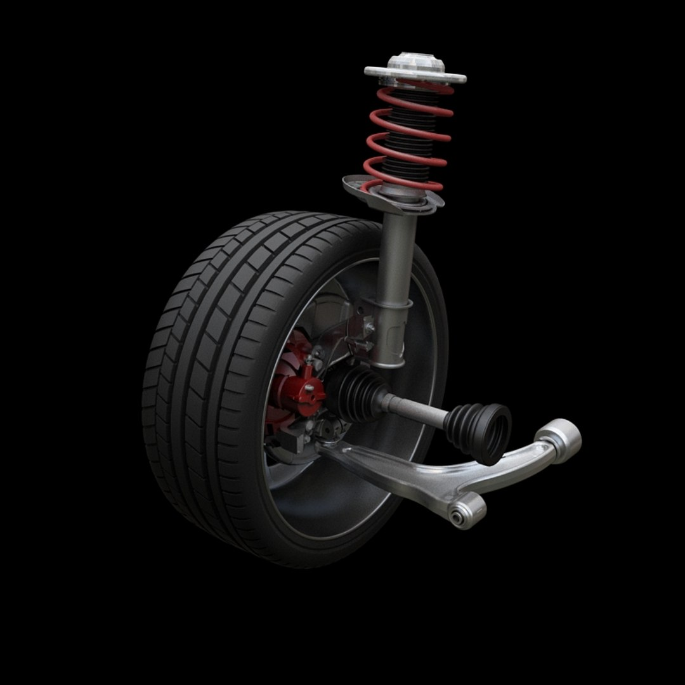

SUSPENSÃO PARA CARROS
---
Suspensão McPherson
Muito comum em carros de passeio.
Simples, eficiente, ocupa pouco espaço e oferece bom conforto.

Simples, eficiente, ocupa pouco espaço e oferece bom conforto.
---
Suspensão com eixo rígido(Eixo de torção)
Usada no eixo traseiro de carros simples e caminhonetes.
Resistente, durável e de fácil manutenção.